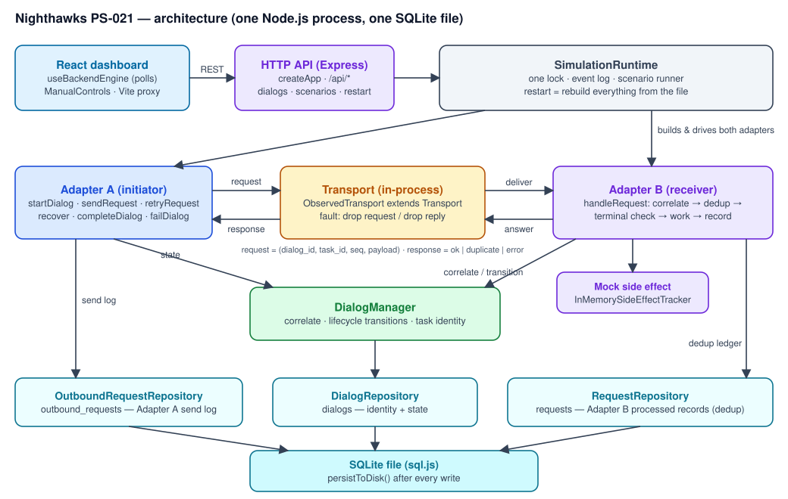
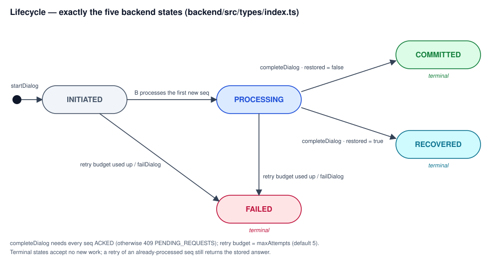
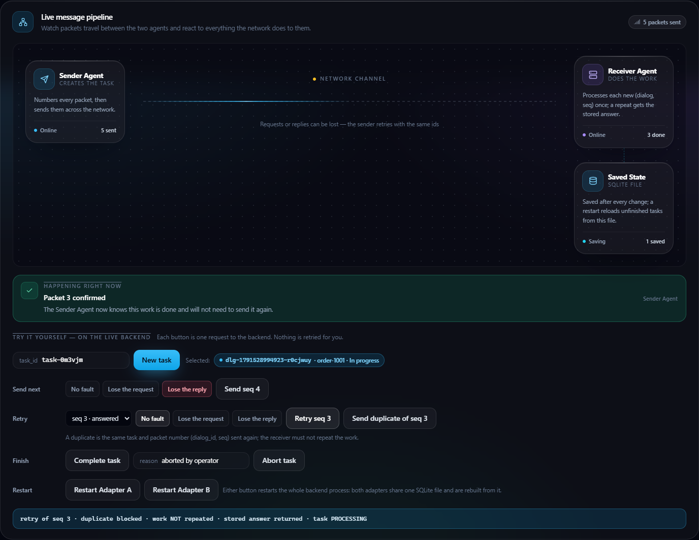
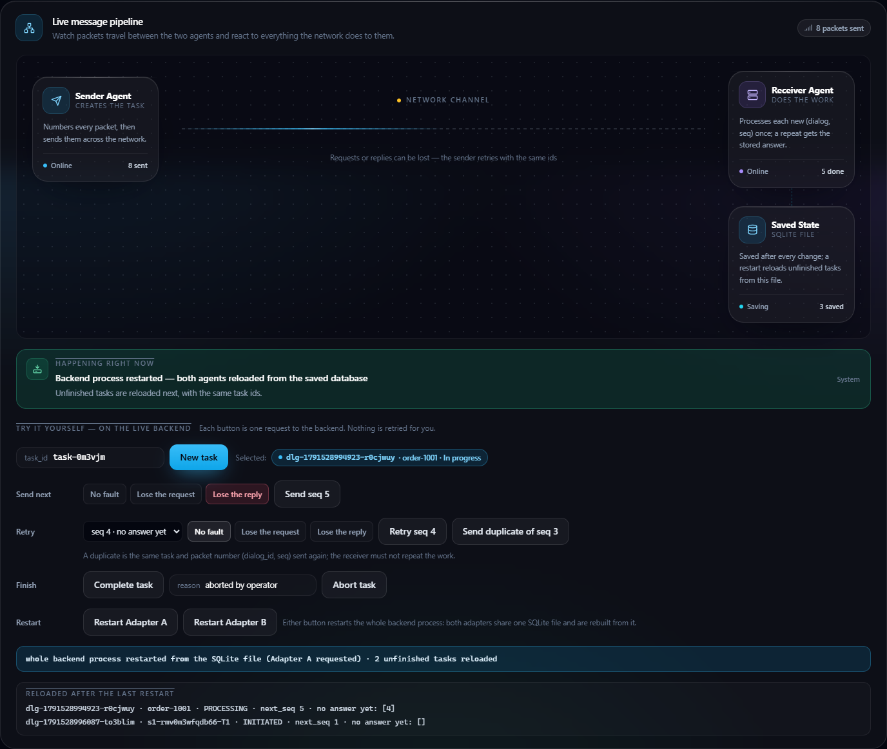
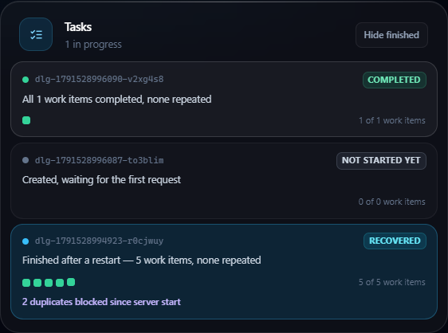

AIORI-3 · 6G & Future Networks · Team Nighthawks
Two mock agent adapters that keep task identity and never repeat recorded work —
across lost requests, lost replies and restarts.
Experimental prototype · not exactly-once · not MCP/A2A · not an IETF standard
| Identifier | Meaning | Where it lives |
|---|---|---|
dialog_id | One A↔B exchange about one task — the correlation key | dialogs table (with state, restored) |
task_id | The unit of work; B rejects a request whose task_id differs | dialogs table |
seq | One logical request; (dialog_id, seq) = the dedup key | A's send log outbound_requests · B's records requests |
PENDING before sending; every write goes to the SQLite file.(dialog_id, seq) was already processed.v0.1-experimental (no mentor draft pinned) — docs/EXPERIMENTAL_SCHEMA.md.

VALID_TRANSITIONS in backend/src/types/index.ts| # | Scenario | What fails | Outcome |
|---|---|---|---|
| 1 | Multiple Dialogs + Retry → Correct Correlation | D2's request lost (D1 also open) | Retry lands on D2 only; D1 untouched — D2 COMMITTED |
| 2 | Request Lost → Retry | Request never reaches B | Processed once on the retry — COMMITTED |
| 3 | Response Lost → Duplicate Request | B did the work, reply lost | Retry = duplicate, stored answer, work not repeated |
| 4 | Adapter B Restart → Durable State Recovery | Reply lost, then restart | Reloaded (next seq 2, pending [1]); retry = duplicate — RECOVERED |
| 5 | Mid-Task Disconnect + Adapter A Restart → Resume | seq 3 reply lost, then restart | next seq 4 from the file; same ids; continues — RECOVERED |
Each runs as an adapter-level test, on the live runtime, as an HTTP call sequence, from the run endpoint, and from a dashboard card.
node scripts/demo.mjs node scripts/trace.mjs
Dashboard on :5173, backend on :3001 with a fresh demo database; the trace prints one line per backend event.

Reply lost → retry: duplicate blocked · work NOT repeated · stored answer returned

After Restart Adapter A: same dialog_id / task_id, next_seq 5, seq 4 still unanswered

Task ends RECOVERED — "5 work items, none repeated"
| Level | Count | Result |
|---|---|---|
| Backend unit + integration (Vitest) | 265 tests · 14 files | all passed |
| — of which HTTP API (supertest) | 62 tests | all passed |
| Frontend unit (Node + jsdom) | 65 checks | all passed |
| Client smoke vs a real backend | 6 steps | all passed |
| Browser E2E (Playwright + Edge, real backend + SQLite) | 16 tests | all passed, repeated runs |
Mutation check — breaking the dedup check in Adapter B fails 10 of 16 browser tests; breaking the duplicate result line fails 3; breaking reconnect fails 1. Details: docs/TEST_RESULTS.md.
handleRequest(req): # backend/src/adapters/AdapterB.ts
dialog = correlate(req.dialog_id, req.task_id) # DIALOG_NOT_FOUND / TASK_MISMATCH
if processed.has(req.dialog_id, req.seq):
return duplicate(stored result) # work NOT re-run
if dialog is terminal: return error(DIALOG_TERMINAL)
result = run_side_effect(req.payload) # ── crash window opens
processed.insert(req.dialog_id, req.seq, result) # persisted ── crash window closes
if dialog.state == INITIATED: transition(PROCESSING)
return ok(result)
recover(): # AdapterA.ts — after every restart
for each INITIATED / PROCESSING dialog: restored = true,
next_seq = send_log.max_seq + 1, pending_seqs = send_log.pending
Team members: <to be completed by the team>
Repository: github.com/anuragyy403/Nighthawks
cd e2e && npm run demo:record